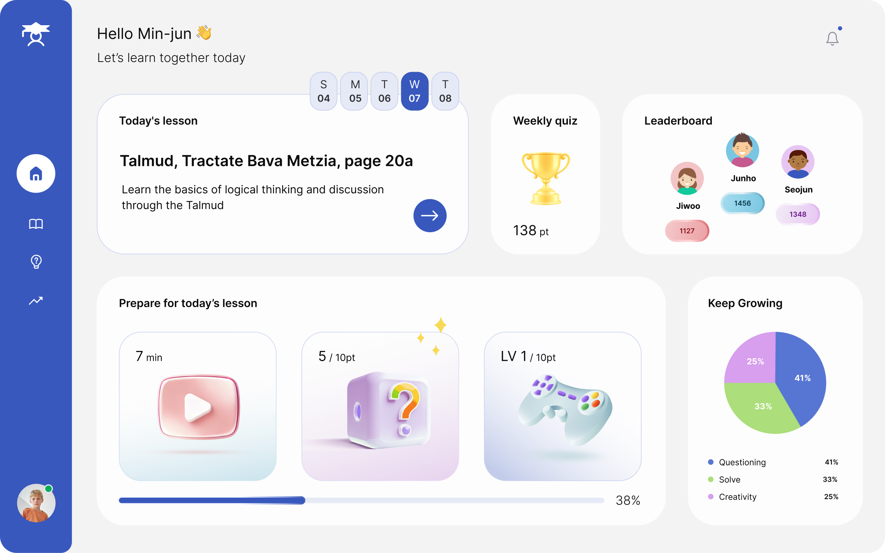

Three things were wrong with this screen
Tap the right side of the image to see the next one — tap the left side to go back.
Click the right side of the image to see the next one — click the left side to go back.
← BackNext →
Home.